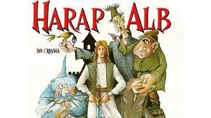
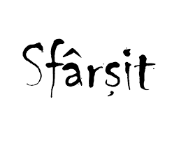

Rezumat
Rezumat
Rezumat

În cazul în care nu ai apucat să citești cartea, îți voi pune la dispoziție rezumatul ”Povestea lui Harap Alb”, prezentat pe scurt, astfel încât să fie ușor de înțeles.
După parcurgerea acestui rezumat, vei avea o viziune de ansamblu, care te va ajuta să pregătești mai bine partea de comentariu de la subiectul 3,
în cazul în care ești norocos să pice chiar basmul cult.

Povestea începe în vremuri îndepărtate, pe vremea în care exista un crai și un împărat, frați aflați la margini de lumi diferite.
Împăratul se numea Împăratul Verde, iar acesta nu avea decât două fete, neavând astfel cine să-i moștenească împărăția.
Fratele său, Craiul avea trei băieți, din acest motiv Împăratul Verde, aflat la capătul puterilor, a trimis de veste că vrea ca unul
dintre feciorii Craiului să-i preia împărăția.

Auzind acestea, Craiul a transmis vestea către cei trei feciori ai săi. După o încercare prin care i-a trecut ca să vadă dacă sunt capabili să devină împărați,
cei mai mari dintre ei nici bine nu au plecat la drum, că s-au și întors acasă înspăimântați. Îmbrăcat în blană de urs și ieșindu-le în cale pentru a vedea
dacă aceștia sunt vrednici să plece la drum, craiul s-a convins de lipsa abilităților celor doi fii mai mari de a deveni împărați.
Fiul cel mic, sfătuit de o bătrână cerșetoare cum să procedeze ca să nu mai pățească rușinea prin care au trecut frații săi, merge la tatăl său și îi cere calul,
armele și hainele din tinerețe. Craiul, uimit de acest lucru și spunând că nu ștIe dacă ar putea să se folosească de calul său de care nici nu mai știe dacă trăiește,
totuși se pune de acord cu fiul cel mic și îi pune la dispoziție cele necesare.

După acordul tatălui său, mezinul pregătește armele, frâiele, căpăstrul și o tavă de jăratic și merge la herghelie, unde pune tava cu jăratic între cai,
iar dintre toți caii, vine să mănânce cel mai bătrân și gârbov cal. Cu toate că fiul cel mic îl lovește în repetate rânduri încercând să-l alunge,
calul se dovedește a fi un cal fermecat care are să-l poarte cu el în siguranță pe tărâmuri îndepărtate. Supus la încercarea tatălui său care se îmbracă
în blană de urs și îi iese în cale, nici acesta și nici calul nu se sperie, iar Craiul mândru îl binecuvântează pe fiu să plece la drum,
spunându-i să se ferească de omul roș, dar mai ales de omul spân.

Fiul cel mic pleacă la drum, cutreieră mult timp, până când în codru îi apare omul spân în față de 3 ori sub înfățișări diferite,
păcălindu-l în cele din urmă pe fiul Craiului să meargă la drum împreună. Această alegere se întoarce împotriva sa,
în momentul în care spânul îl păcălește pe fecior să coboare într-o fântână pentru a se răcori, moment în care pentru a-i cruța viața,
spânul îl obligă să i se supună, își schimbă hainele între ei și îl botează Harap Alb.

Cei doi pleacă la drum spre Împăratul Verde cu identitățile schimbate, iar odată ajunși la împărăție, Spânul este primit cu voie bună,
iar Harap Alb este trimis la grajduri. Pentru a-l impresiona pe Împărat, Spânul îi spune împăratului că are cea mai bună slugă și îl trimite pe Harap Alb
să meargă în Grădina Ursului, pentru a-i aduce o salată rară, pe care Împăratul cu greu putea să o dobândească, iar mai apoi, o piatră nestemată din fruntea cerbului.
Aceste două sarcini extraordinar de grele aveau să îl expună pe Harap Alb la un pericol de moarte. Totuși, ajutat de bătrâna înțeleaptă din nou,
care se dovedește a fi Sfânta Duminică, acesta trece cu bine și spre uimirea Împăratului și a omului spân, vine la împărăție cu lucrurile mult dorite.
În cele din urmă, Harap Alb este expus și la a treia încercare după ce este ridiculizat de omul Spân, aceia de a o aduce la împărăție pe fata omului Roș,
aflată la o altă margine de lume și cunoscută ca fiind o mare vrăjitoare. Astfel, Harap Alb pleacă spre împărăția Omul Roș, iar în drumul său spre acesta,
Harap Alb face mai multe fapte bune. Prima dată, fiind nevoit să treacă peste o nuntă de furnici pentru a-și continua drumul, acesta hotărăște să ocolească
podul pe care erau furnicile, iar mai apoi, ajută un roi de albine cărora le-a construit un loc în care să locuiască. Ca și consecință a faptelor sale,
Harap Alb primește de la furnici și de la crăiasa albinelor câte o aripă fermecată, care aveau să îi fie de ajutor în drumul său spre Omul Roș.

Continuându-și drumul spre îndepărtatul tărâm, Harap Alb întâlnește rând pe rând cinci făpturi ciudate care se oferă să îl însoțească și să-l ajute să ajungă
la destinație cu bine. Numele acestor făpturi sunt sugestive pentru modurile în care ar putea să îl ferească de rele: Gerilă, Setilă, Ochilă, Flămânzilă și
Păsări-Lăți-Lungilă. Cu ajutorul acestora Harap Alb trece de încercări grele pe care i le-a scos drumul în cale, astfel că ajunge la Omul Roș.
La rându-i, Omul Roș, de asemenea îl supune la o serie de probe dificile, pe care de asemenea le depășește, iar într-un final reușește să plece spre împărăția lui
Verde-Împărat cu fata Omului Roș.

Pe drum, Harap Alb și fata omului Roș prin drag unul de celălalt, iar de-ndată ce ajung la împărăție, fata dezvăluie adevărata identitate al lui Harap Alb,
iar Spânul, nervos că a fost trădat de către acesta, se repede și îi taie capul. La rândul său, Spânul este ucis de către calul lui Harap Alb,
care îl azvârle pe Spân din înaltul cerurilor.
În cele din urmă, fata Împăratului Roș îl readuce la viață pe Harap Alb cu apa moartă și apa vie, pe care Harap Alb le obținuse în încercarea de a primi
binecuvântarea de a lua fata cu el . Astfel, Harap Alb se trezește și se căsătorește cu fata Împăratului, totodată primind binecuvântare și împărăția lui Verde-Împărat.


Hai Apasa